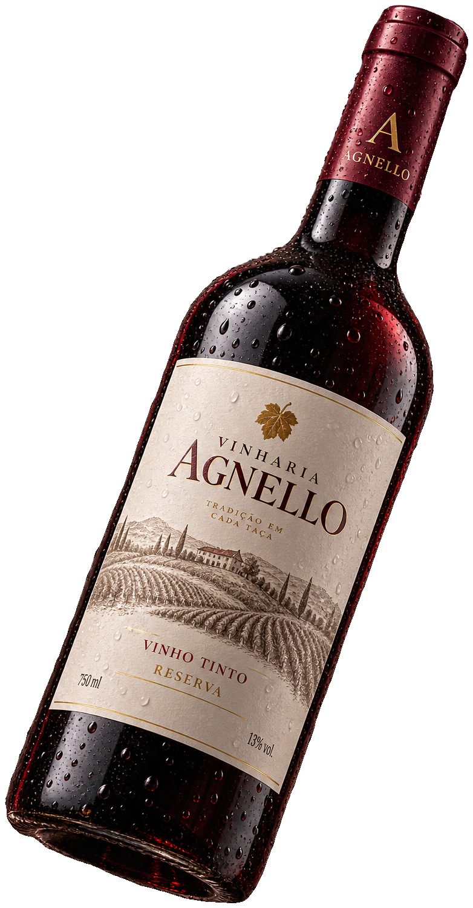
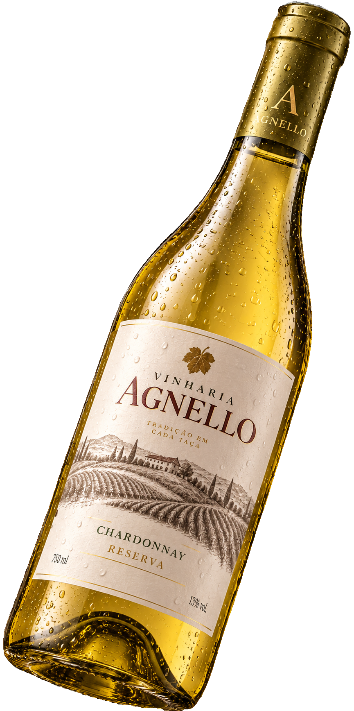

| Vinho | Tipo / Uva | Origem | Características | Harmonização | Preço |
|---|---|---|---|---|---|
|
 Agnello Tinto Reserva |
Cabernet Sauvignon | São Paulo | Encorpado, intenso, com notas de frutas vermelhas e especiarias. | Carnes vermelhas e massas com molhos intensos. | R$ 129,90 |
|
 Agnello Chardonnay |
Chardonnay | Serra Gaúcha | Leve, fresco e frutado, com notas cítricas. | Peixes, frutos do mar e massas leves. | R$ 89,90 |
 Agnello Rosé
Agnello Rosé
|
Merlot | Serra Gaúcha | Refrescante, delicado e frutado. | Saladas, massas leves e aperitivos. | R$ 79,90 |
 Agnello Cabernet Sauvignon
Agnello Cabernet Sauvignon
|
Cabernet Sauvignon | Mendoza, Argentina | Estruturado, com taninos marcantes e notas de frutas maduras. | Carnes grelhadas e queijos curados. | R$ 149,90 |
 Agnello Malbec
Agnello Malbec
|
Malbec | Mendoza, Argentina | Frutado, macio e intenso, com notas de ameixa. | Carnes assadas, hambúrgueres e massas. | R$ 139,90 |
 Agnello Merlot
Agnello Merlot
|
Merlot | Serra Gaúcha | Macio, equilibrado e aromático. | Aves, massas e risotos. | R$ 99,90 |
.png) Agnello Sauvignon Blanc
Agnello Sauvignon Blanc
|
Sauvignon Blanc | Chile | Fresco, cítrico e aromático. | Peixes, frutos do mar e saladas. | R$ 94,90 |
 Agnello Pinot Noir
Agnello Pinot Noir
|
Pinot Noir | Chile | Elegante, leve e delicado, com frutas vermelhas. | Risotos, aves e massas leves. | R$ 119,90 |
|
Agnello Gran Reserva
|
Cabernet Sauvignon | Chile | Complexo, encorpado e elegante, com notas de frutas negras e madeira. | Carnes nobres e queijos maturados. | R$ 219,90 |
| Agnello Moscatel | Moscato | Serra Gaúcha | Doce, aromático e refrescante. | Sobremesas, frutas e queijos suaves. | R$ 84,90 |